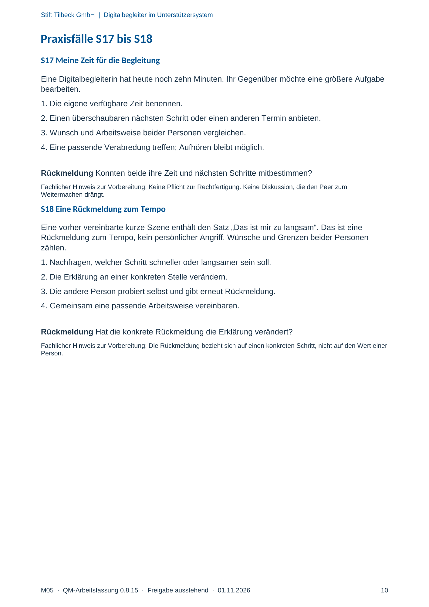

M05 · Originalseite 10
Eine Rückmeldung zum Tempo
Original-Druckseite mit S18. Auf derselben Seite stehen außerdem S17. Diese sind dadurch keine zusätzliche Aufgabe.
Fragen und Ankreuzfelder werden auf dem Ausdruck bearbeitet. Die Lesefassung speichert keine Antworten.
Lesefassung · Seite 10
Stift Tilbeck GmbH | Digitalbegleiter im Unterstützersystem
Praxisfälle S17 bis S18
S17 Meine Zeit für die Begleitung
Eine Digitalbegleiterin hat heute noch zehn Minuten. Ihr Gegenüber möchte eine größere Aufgabe
bearbeiten.
1. Die eigene verfügbare Zeit benennen.
2. Einen überschaubaren nächsten Schritt oder einen anderen Termin anbieten.
3. Wunsch und Arbeitsweise beider Personen vergleichen.
4. Eine passende Verabredung treffen; Aufhören bleibt möglich.
Rückmeldung Konnten beide ihre Zeit und nächsten Schritte mitbestimmen?
Fachlicher Hinweis zur Vorbereitung: Keine Pflicht zur Rechtfertigung. Keine Diskussion, die den Peer zum
Weitermachen drängt.
S18 Eine Rückmeldung zum Tempo
Eine vorher vereinbarte kurze Szene enthält den Satz „Das ist mir zu langsam“. Das ist eine
Rückmeldung zum Tempo, kein persönlicher Angriff. Wünsche und Grenzen beider Personen
zählen.
1. Nachfragen, welcher Schritt schneller oder langsamer sein soll.
2. Die Erklärung an einer konkreten Stelle verändern.
3. Die andere Person probiert selbst und gibt erneut Rückmeldung.
4. Gemeinsam eine passende Arbeitsweise vereinbaren.
Rückmeldung Hat die konkrete Rückmeldung die Erklärung verändert?
Fachlicher Hinweis zur Vorbereitung: Die Rückmeldung bezieht sich auf einen konkreten Schritt, nicht auf den Wert einer
Person.
Originalseite ansehen
